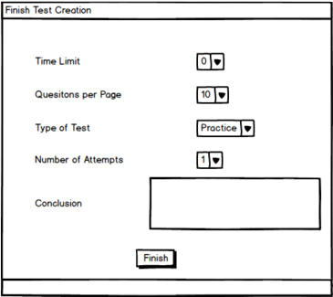

This introductory scenario goes over finishing a test once the teacher has added all questions he or she wishes to add to the test bank.
The teacher must first create a test with any amount of questions. Upon adding all desired questions to the test, the teacher finishes the test creation process by adding additional settings to the test as seen in Figure 1.
Figure 1: A test creation finish form. 
As seen in Figure 1, the values are the default values that are automatically there when the teacher finishes a test. However, the values are changed by clicking on the dropdown menues and setting the fields to the appropriate level.
The teacher clicks on the time limit drop down menu to add a time limit to the test. The teacher clicks on the drop down menu next to the Questions per Page to add how many questions are allotted to each page of the test (i.e. there can be multiple pages of the test, but each page will only have the amount of questions specified by the teacher). By setting the type of test, the teacher decides if the test is a practice test or a real test to be administered for a grade. The number of attempts options allows the teacher to let students take a test multiple times or limit the attempts to a single try. While the conclusion section allows the teacher to give the students a message at the end of the test.
Once the teacher is done with the settings, the teacher clicks on the finish button at the bottom of the screen which will activate the test, and save any settings the teacher set.